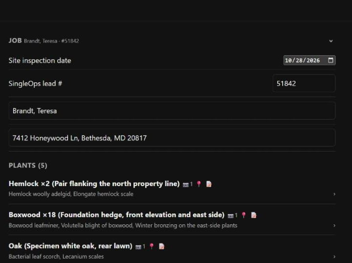
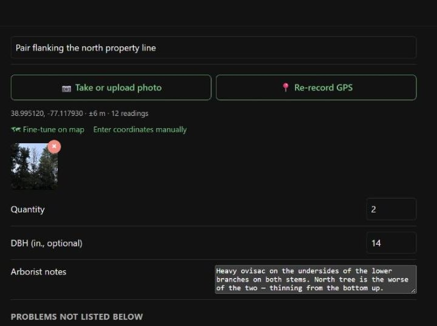
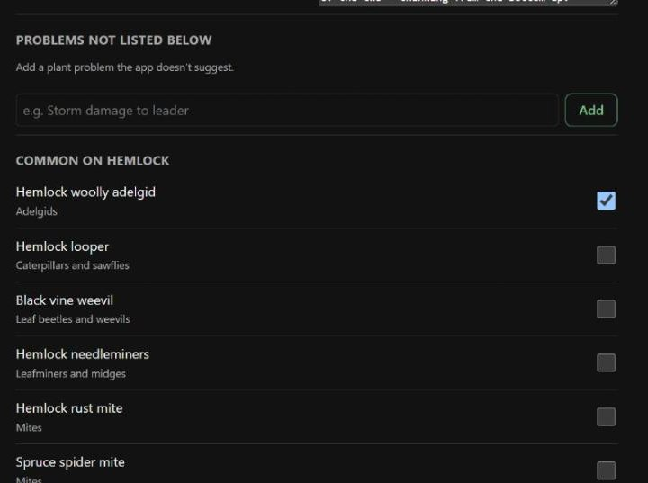
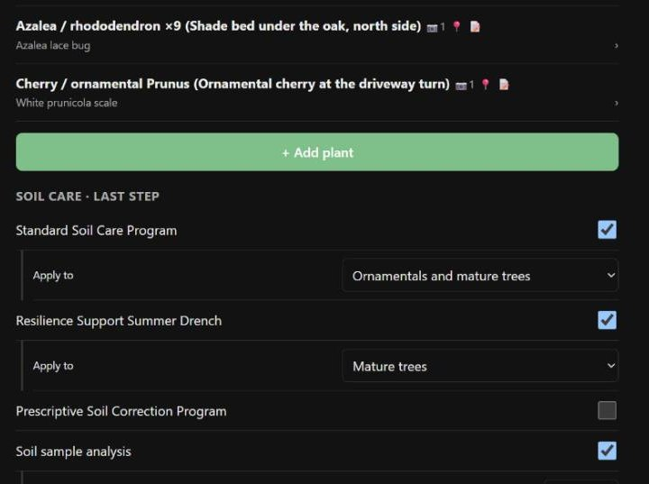
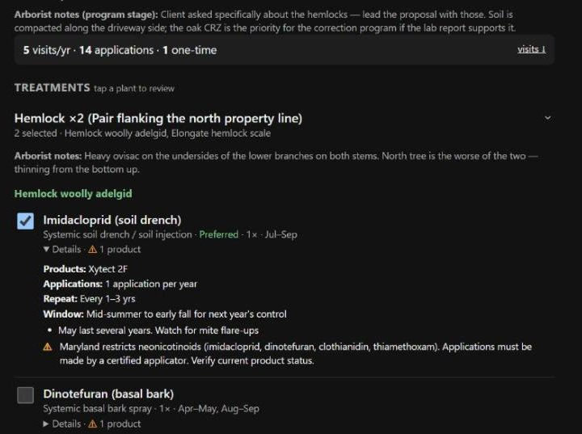
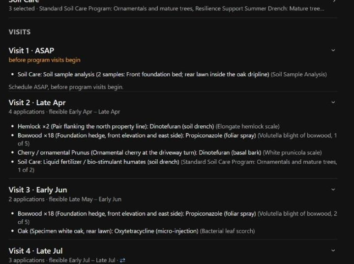
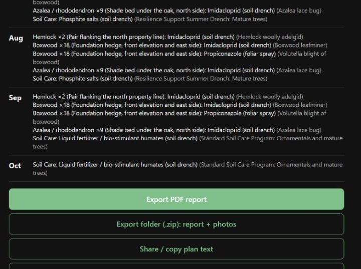

A recorded walkthrough of the PHC Planner on a real landscape, how it turns a list of problems into a year of timed visits, the files it drops on your phone, how they get to OneDrive, and what the office does with them to build the SingleOps program.
Everything from Set-up to the OneDrive upload. The visit isn't finished until the ZIP is in the folder and someone knows it's there.
Watches the folder, builds the recurring program, owns the visit names, treatment tags and the tier tag, runs the quality checks.
Creates the shared OneDrive folder and its permissions, and creates any SingleOps item group the catalog is missing before the program is built.
The PHC Planner is an offline treatment-plan framework. Tell it what is wrong with each plant and it tells you what can be done about it, by which method, how many times a year and in which months — then packs that into the fewest visits that still respect every window. It does not talk to SingleOps, and it carries no rates and no prices. Rates come off the label; money comes from the catalog. A plan is not a quote.
Do this in the office on wifi. The first load is the only one that needs a connection — after it, the app, the whole pest knowledge base and the PDF and ZIP libraries live on the device.
One landscape in Bethesda: two hemlocks, an eighteen-plant boxwood hedge, a specimen white oak, a shade bed of azaleas and an ornamental cherry. Recordings are click-to-play.

Step 1 · The jobFive fields at the top of the Landscape tab, and two of them decide things a long way downstream.
51842-1, 51842-3 — and the
front of the export folder name. Leave it blank and the office renames five files
by hand.Last, First. That is the string
Conor matches against the SingleOps client record.
Step 2 · A plant groupEighteen boxwoods in one hedge are a single entry with a quantity of 18. Two hemlocks flanking a property line are one entry with a quantity of 2. The group number follows through to the map pin, the photo filename and the inventory row.
Pair flanking the north
property line — a technician who has never seen the property reads this
first.
Step 3 · ProblemsBelow the details is the pest list filtered to that host and grouped by category — adelgids, mites, armored scales, blights. Ticking a problem is what puts treatments into the plan. Nothing else does.
Re-record GPS averages readings and reports what it managed —
±6 m · 12 readings. Under a canopy that is often not
good enough, so drag the imagery until the crosshair sits on the plant.
placed on map instead of an accuracy
figure — and that is the more trustworthy of the two. Back to GPS undoes
it.
Step 5 · Soil careProperty-wide programs, not tied to any pest. Each has an Apply to scope instead of a plant: ornamentals, mature trees, both, or specific plants you pick off the treatment plan.
The app takes every problem you ticked, works out which treatments apply, how many applications a year each needs and which months they can happen in, then packs them into the fewest visits that respect every window.
5 visits/yr · 14 applications · 1
one-time. That one-time is the soil sampling, scheduled ASAP before the
program starts.
Step 7 · Flags
Each problem lists its chemical options ranked, with Preferred first and
the rest folded under Alternatives; non-chemical options sit under
Cultural. Open any option for its product, repeat interval and compliance
flags.

Step 8 · VisitsThis is the part the office cannot reconstruct from a list of treatments, and the reason the export is worth more than a text message.
Visit 2 · Late Apr · 4
applications · flexible Early Apr – Late Apr.⇆ also fits Visit 5, 6 means that application's window
spans more than one visit. Those are the ones the office can move when a route needs
rebalancing — and the only ones.
Step 9 · ExportTake the folder (.zip) — it is the PDF plus everything else — and then take the PDF on its own as well, so the office can read it on a phone without unzipping.
One ZIP per landscape, named for the lead, the client and the inspection date. These are the real files from the demo plan — click through them.
The document Conor works down while building the program. Page 1 is the job header, the visit summary and the inventory; pages 2–3 are the treatment plan, one table per plant group; page 4 is the visit breakdown the recurrence is built from; pages 5–6 are the photos.
Every photo filename, every inventory row and every map pin share one ID, built from the SingleOps lead #.
| ID | What it is |
|---|---|
| 51842-1 | Group 1 — the hemlock pair |
| 51842-2 | Group 2 — the boxwood hedge, 18 plants |
| 51842-3 | Group 3 — the specimen white oak |
| 51842-4 | Group 4 — the azalea bed, 9 plants |
| 51842-5 | Group 5 — the ornamental cherry |
5 program visits per year · 14 applications · 1
one-time visit (ASAP), the site map, and the inventory.Problem · Treatment · Method · Apps/yr · Timing
· Products, with the compliance flags printed underneath, then Soil
Care.Do this before you leave the property, or at the latest before the end of the day. A plan that only exists on your phone does not exist.
One folder per plan, and the folder name carries the SingleOps lead # because the filenames put it at the front but nothing else does.
RTEC Treecare › PHC Planner Exports › 2026 › 51842 Brandt Teresa BETHESDA
PHC Planner Exports in the shared RTEC library with the year subfolder,
give the arborists edit and the office read, and make sure it shows up in everyone's OneDrive
app. Until that exists, arborists are emailing 4 MB attachments.
Open the report beside SingleOps. Pages 1–3 give you the inventory and what gets treated; page 4 gives you the visits. Work in that order.
1_CPP_Plus or 1_CPP_Premier.PHC Targeted Program.
There is no tag by elimination.S-, site conditions
P-, any IPM- targets, and the Lead Source carried from the
lead.Each group carries its four lines: the plant line (Tree #, species, DBH), the service, PHC Work labour in MHrs, and the material. Here is the demo plan mapped onto the standard groups.
| From the report | Apps/yr | Timing | Standard group | Material |
|---|---|---|---|---|
| 1 · Hemlock ×2Imidacloprid (soil drench) — woolly adelgid | 1 | Jul–Sep | PHC_SIN | Xytect 2F |
| 1 · Hemlock ×2Dinotefuran (soil drench) — elongate hemlock scale | 1 | Apr–May | PHC_SIN | Transtect |
| 2 · Boxwood ×18Imidacloprid (soil drench) — leafminer | 1 | Jul–Sep | PHC_SIN | Xytect 2F |
| 2 · Boxwood ×18Propiconazole (foliar spray) — Volutella blight | 5 | Apr–Sep | ask Melinda | Concert II |
| 3 · OakOxytetracycline (micro-injection) — bacterial leaf scorch | 1 | May–Jun | ask Melinda | Bacastat |
| 4 · Azalea ×9Imidacloprid (soil drench) — lace bug | 1 | Jul–Sep | PHC_SIN | Xytect 2F |
| 5 · CherryDinotefuran (basal bark) — white prunicola scale | 1 | Apr | PHC_SIN | Transtect |
| Soil CareLiquid fertilizer / bio-stimulant humates | 2 | Mar–Apr, Sep–Oct | PHC_BST | Actosol |
| Soil CarePhosphite salts (soil drench) | 1 | Jul–Aug | ask Melinda | phosphite |
| Soil CareSoil sample analysis, 2 samples | 1 | ASAP | one-off | lab fee |
PHC_SIN — Soil Injected Systemic and the
bio-stimulant on PHC_BST without argument. The foliar fungicide rounds, the
micro-injection and the phosphite drench do not match anything in the current catalog.
Don't free-type a new item — that is how near-duplicates get created. Melinda
creates the group; while the catalog cleanup is under way, confirm live group names before
you build.
Name each visit with its treatment code and a number — SIN #1,
Fall Bio-Stim — and give it exactly one PHC_ treatment
tag matching the name. That tag is what the Route Planner filters on and what treatment
counts are built from.
⇆ also fits markers on
page 4 tell you which applications can move without breaking their window.
PHC_ tag, matching its namePHC Targeted Program